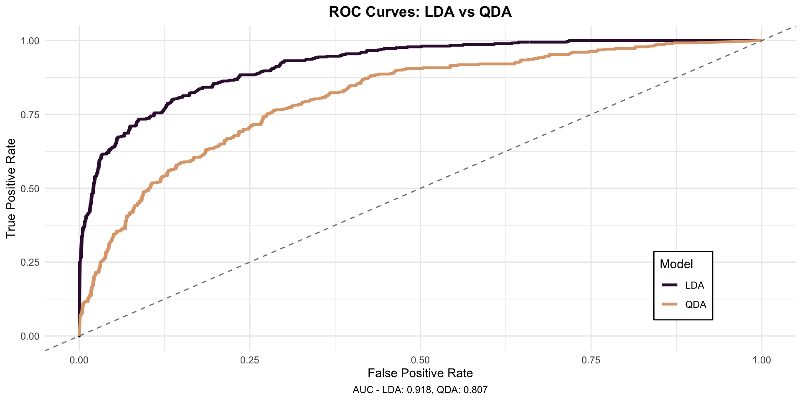
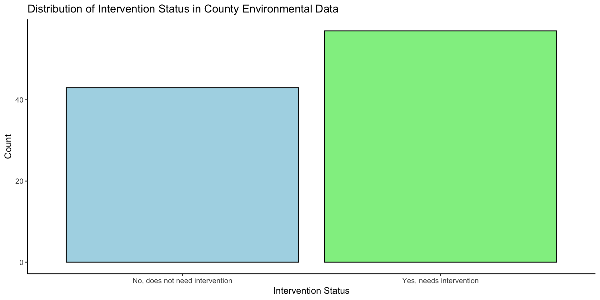

| California Counties Environmental Data | |||
|---|---|---|---|
| Air Quality and Green Space Metrics | |||
| County ID | Intervention | PM 2.5 (µg/m³) | Green Space (%) |
| 101 | Yes | 12.5 | 35.4 |
| 102 | No | 15.8 | 22.1 |
| 103 | Yes | 9.7 | 48.7 |
| 104 | No | 18.2 | 19.3 |
| New County | ? | 19.5 | 47.3 |
| New County | ? | 21.2 | 13.2 |
ESM 596 Presentation
Statistical Machine Learning Methods
Overview
In this presentation, we will discuss:
- Linear Discriminant Analysis
- Quadratic Discriminant Analysis
- Accuracy Metrics in Machine Learning
- Machine Learning Workflow in R Using Tidymodels
Linear Discriminant Analysis:
Mathematical Foundations and Environmental Applications
What is Linear Discriminant Analysis?
- A supervised dimensionality reduction and classification technique
- Projects high-dimensional data onto a lower-dimensional space while maximizing class separability
- Particularly effective when classes have different means but similar covariance structures
Core Objective
- Find a linear combination of features that characterizes/separates two or more classes
- Maximize the ratio of between-class variance to within-class variance
Consider this classification problem
You are concerned about air quality in CA counties. You wonder, can I create a ML model that can identify if a county needs air quality intervention based on particulate matter and percent green space?
Key Components
- Within-class scatter matrix (Sw)
- Between-class scatter matrix (Sb)
- Projection matrix (W)
LDA: Optimizing for W
The objective is to find W that maximizes:
\[J(W) = \frac{|W^T S_b W|}{|W^T S_w W|} \]
In descriptive words:
\[ {\scriptsize J(\text{Projection}) = \frac{\text{Projected Between-Class Scatter Volume}}{\text{Projected Within-Class Scatter Volume}}} \]
Within-Class Scatter Matrix
\[S_w = \sum_{i=1}^c \sum_{x \in C_i} (x - \mu_i)(x - \mu_i)^T\]
where:
- c is the number of classes
- Ci is the set of samples in class i
- μi is the mean of class i
Between-Class Scatter Matrix
\[S_b = \sum_{i=1}^c N_i(\mu_i - \mu)(\mu_i - \mu)^T\]
where:
- Ni is the number of samples in class i
- μ is the overall mean

LDA: Optimizing for W
The objective is to find W that maximizes:
\[J(W) = \frac{|W^T S_b W|}{|W^T S_w W|} \]
In descriptive words:
\[ J(\text{Projection}) = \frac{\text{Projected Between-Class Scatter Volume}}{\text{Projected Within-Class Scatter Volume}} \]
Key Assumptions
- Data is normally distributed
- Classes have similar covariance matrices
- Features are not perfectly correlated
Limitations and Considerations
- Linearity assumption may not hold for complex environmental relationships
- Sensitive to outliers
- Class balance important
Quadratic Discriminant Analysis
What is Quadratic Discriminant Analysis?
- Classification method that allows for different covariance matrices between classes
- Similar to Linear Discriminant Analysis, but uses quadratic decision boundaries
- More flexible than LDA but requires more parameters to be estimated
- Particularly useful when class distributions have different shapes/spreads
QDA: Optimizing for k
QDA assigns a data point to the group that gives the highest score using this formula:
\[ \begin{align*} \delta_k(x) = & \overbrace{-\frac{1}{2}\log|\Sigma_k|}^{\text{Covariance Shape}} \\ & + \overbrace{-\frac{1}{2}(x-\mu_k)^T\Sigma_k^{-1}(x-\mu_k)}^{\text{Within Class Scatter}} \\ & + \overbrace{\log(\pi_k)}^{\text{Between Class Scatter}} \end{align*} \]
Decision:
Choose the group (k) with the highest score - that’s your classification!
Key Assumptions
- Each class follows a multivariate normal distribution
- Classes can have different covariance matrices
- Sufficient sample size for each class to estimate covariance matrices
- No perfect multicollinearity among predictors
QDA vs LDA: Key Differences
- QDA allows different covariance matrices for each class
- Decision boundaries are quadratic (curved) rather than linear
Best Practices
- Check assumptions (normality, sample size)
- Compare with LDA, QDA and other methods (random forest, knn, etc)
- Use cross-validation
- Validate model performance
Using Performance Metrics
to Compare Different ML Models
How do I compare model performance?
- Accuracy
- Precision
- AUC ← We’ll focus on this one!
Area Under Curve (AUC)
- It is the area under the ROC Curve
- Receiver Operating Characteristic Curve
- Measures the ability of a classifier to distinguish between classes.
ROC Curve Calculation
- Purpose: Visualize the trade-off between TPR and FPR at various threshold settings.
- True Positive Rate (TPR) = \[ ( \frac{\text{True Positives}}{\text{True Positives + False Negatives}} ) \]
- False Positive Rate (FPR) = \[ ( \frac{\text{False Positives}}{\text{False Positives + True Negatives}} ) \]
Comparing ML model performance
Implementing ML Workflow in R
using Tidymodels
tidymodels
tidymodelsis a collection of R packages that helps you do ML work in R using thetidyverseframework
General steps in tidymodels framework
- Data inspection
- Data splitting
- Feature engineering with
recipes - Model specification
- Workflow Creation
- Model training
- Model Performance Evaluation
- Prediction
Let’s revisit our initial data
We want to compare LDA vs. QDA performance on our air quality intervention data.
| California Counties Environmental Data | |||
|---|---|---|---|
| Air Quality and Green Space Metrics | |||
| County ID | Intervention | PM 2.5 (µg/m³) | Green Space (%) |
| 101 | Yes | 12.5 | 35.4 |
| 102 | No | 15.8 | 22.1 |
| 103 | Yes | 9.7 | 48.7 |
| 104 | No | 18.2 | 19.3 |
| New County | ? | 19.5 | 47.3 |
| New County | ? | 21.2 | 13.2 |
Step 1: inspect the data
Visualize distribution of outcome to see if there’s a class imbalance
Step 1: Inspect the data
Create a correlation matrix to understand how your variables are related to each other

Step 2: Data splitting
Now that you’ve explored your data, you can start working with it.
library(tidymodels)
set.seed(123) # For reproducibility
# Split data into training and testing sets
data <- initial_split(county_data, prop = 0.8,
strata = intervention_status)
# Extract training data
training <- training(data)
# Extract testing data
testing <- testing(data)
# Create cross-validation folds for use later
cv_folds <- vfold_cv(training, v = 5, strata = intervention_status)Step 3: Feature engineering with recipes
| county_id | intervention_status | pm25 | percent_green_space | industrial_emissions | vehicle_density | population_density | average_temperature | traffic_flow | energy_consumption | industrial_area_percent | forest_cover_percent |
|---|---|---|---|---|---|---|---|---|---|---|---|
| 7 | No | 46.149718 | 51.00 | 69.18 | 1138.21 | 2468.05 | 25.26 | 3110.55 | 1.66 | 46.70 | 44.26 |
| 8 | No | 32.393074 | 55.93 | 34.73 | 815.24 | 2415.22 | 28.07 | 1181.53 | 2.23 | 41.92 | 69.10 |
| 11 | No | 47.088491 | 52.16 | 47.59 | 1298.47 | 294.61 | 10.08 | 2179.01 | 2.83 | 52.67 | 67.02 |
| 13 | No | 7.732426 | 81.09 | 16.21 | 1353.28 | 1848.14 | 27.33 | 254.66 | 8.62 | 13.74 | 83.37 |
| 15 | No | 37.426832 | 72.77 | 52.19 | 1024.96 | 3887.72 | 16.28 | 648.78 | 7.34 | 26.55 | 65.94 |
Step 3: Feature engineering with recipes
# Create recipe and pre-process data
recipe <- recipe(intervention_status ~ .,
data = training) %>%
# Remove unique identifier
step_rm(county_id) %>%
# Normalize all numeric predictors
step_normalize(all_numeric_predictors()) %>%
# Create interaction terms for related environmental features
step_interact(~ forest_cover_percent:percent_green_space) %>%
step_interact(~ industrial_emissions:industrial_area_percent) %>%
step_interact(~ traffic_flow:vehicle_density) %>%
# Convert class to a factor
step_string2factor(all_nominal_predictors()) %>%
# Create dummy variables for the outcome (necessary for some models)
step_dummy(all_nominal_predictors(), one_hot = TRUE)Step 4: Model specification
Step 5: Workflow Creation
Step 6: Model training
Includes cross-validation and tuning hyperparamters
# Fit the model using cross-validation
lda_cv_results <- fit_resamples(
lda_workflow,
resamples = cv_folds,
metrics = metric_set(roc_auc)
)
# Fit final model on full training data
lda_final_fit <- fit(lda_workflow, data = training)
# Make predictions on test set
lda_predictions <- predict(lda_final_fit, new_data = testing)
lda_class_pred <- predict(lda_final_fit, new_data = testing, type = "prob")
##################################################
# Fit the model using cross-validation
qda_cv_results <- fit_resamples(
qda_workflow,
resamples = cv_folds,
metrics = metric_set(roc_auc)
)
# Fit final model on full training data
qda_final_fit <- fit(qda_workflow, data = training)
# Make predictions on test set
qda_predictions <- predict(qda_final_fit, new_data = testing)
qda_class_pred <- predict(qda_final_fit, new_data = testing, type = "prob")Step 7: Model performance Evaluation
# Combine predictions with actual values
lda_results <- cbind(
lda_predictions,
lda_class_pred,
testing %>% dplyr::select(`intervention_status`)
) %>%
mutate(intervention_status = as.factor(intervention_status))
# Create confusion matrix
lda_conf_mat <- conf_mat(lda_results, truth = intervention_status, estimate = .pred_class)
# Plot ROC curve
lda_roc_curve <- lda_results %>%
roc_curve(intervention_status, .pred_Yes) %>%
autoplot() +
labs(title = "LDA ROC Curve")
##################################################
# Combine predictions with actual values
qda_results <- bind_cols(
qda_predictions,
qda_class_pred,
testing %>% dplyr::select(`intervention_status`)
) %>%
mutate(intervention_status = as.factor(intervention_status))
# Create confusion matrix
qda_conf_mat <- conf_mat(qda_results, truth = intervention_status, estimate = .pred_class)
# Plot ROC curve
qda_roc_curve <- qda_results %>%
roc_curve(intervention_status, .pred_Yes) %>%
autoplot() +
labs(title = "QDA ROC Curve")Step 8: Prediction
Finally, you can use your QDA workfow on new data!
Summary
- Review theory behind LDA and QDA
- Implemented full LDA and QDA workflow in R using Tidymodels
Thank you!
ESM 596 Presentation